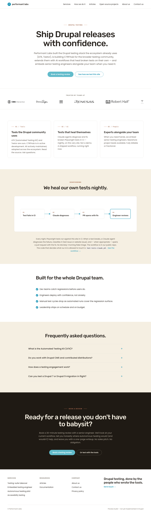

#62BBCB). Matches preview pixel-for-pixel.#5DC6E8). Matches preview.#1893B4).
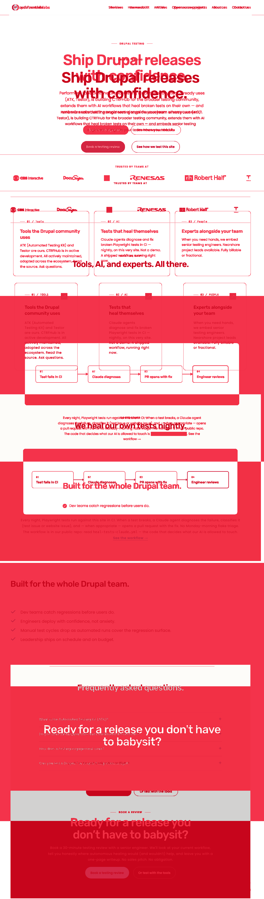
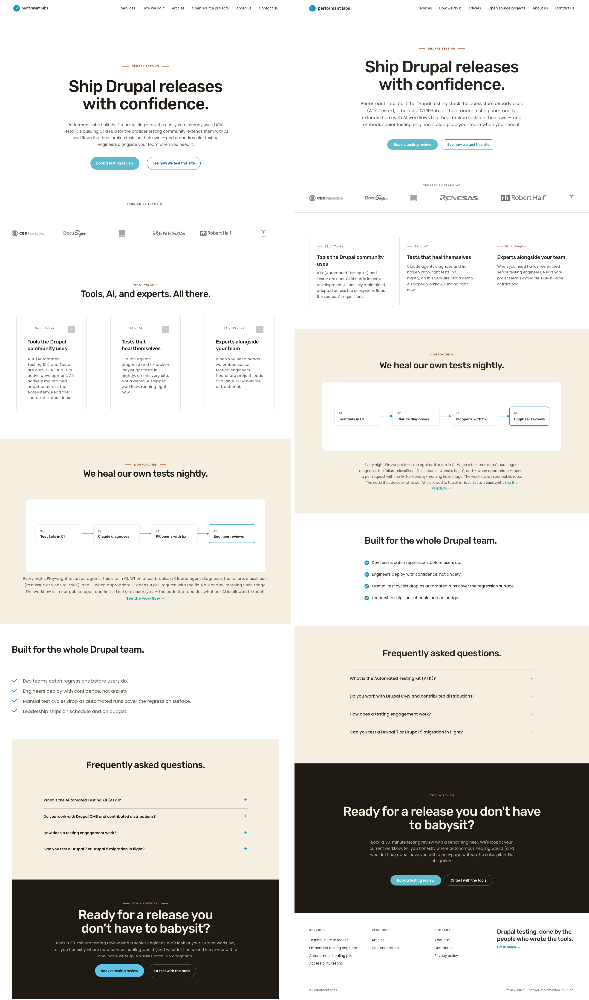

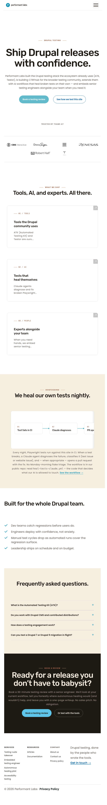
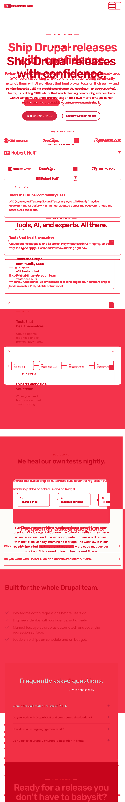
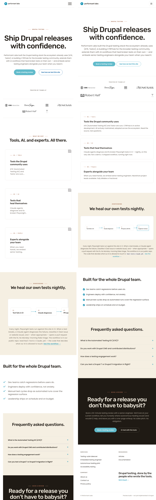


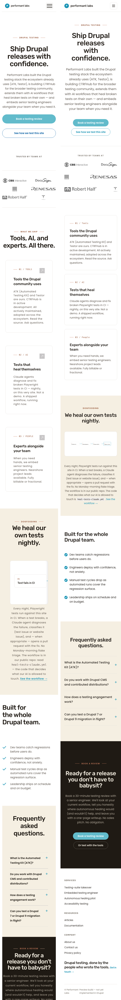
| # | Section | 1280 | 768 | 375 | Verdict | Description |
|---|---|---|---|---|---|---|
| 1 | Header | match | match | match | PASS | No pill, height 73 px, 6 nav items + logo. 8.1 + 8.6 outcomes hold. |
| 2 | Hero band | match | match | match | PASS | H1 + eyebrow + body + cyan CTA + outline secondary. No overflow. Tight transition to logo band. 8.2/8.5/8.7 hold. |
| 3 | Logo bar | match | match | match | PASS | 6 grayscale bitmap logos. Single row at 1280/768; 3×2 grid at 375. 8.3 holds. |
| 4 | Feature cards | match | match | match | PASS | 3/1/1 column progression. Terracotta kicker + arrow + H3 + body. 8.4 holds. |
| 5 | Heal-flow | match | match | match | PASS | DOGFOODING eyebrow, H2, 4-step flow with step 04 cyan-highlighted, body + cyan link. |
| 6 | Built-for checklist | delta-minor | delta-minor | delta-minor | PASS | Content + color match. Live renders the cyan check as an outline glyph; preview renders a filled circle with white check. Decorative variant only; non-blocking. |
| 7 | FAQ accordion | match | match | match | PASS | 4 collapsed items, cyan + glyph on each (closed-state). 8.6 holds. |
| 8 | Footer-CTA | match | match | match | PASS | Espresso band, BOOK A REVIEW eyebrow, H2, body, #5DC6E8 dark-zone cyan CTA + outline secondary. 8.7 holds. |
| 9 | Footer | match | match | match | PASS | 3-column nav + signature column, © line, Privacy Policy link. |
Composites only (live left, preview right). Per-viewport crops for 768 and 375 are in docs/pl2/handoffs/screenshots/cycle-8-final-reaudit/.
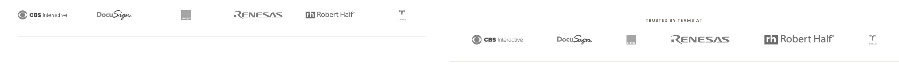
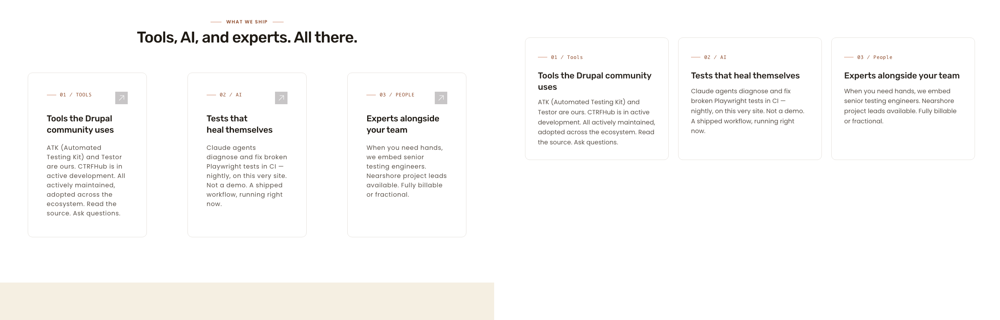
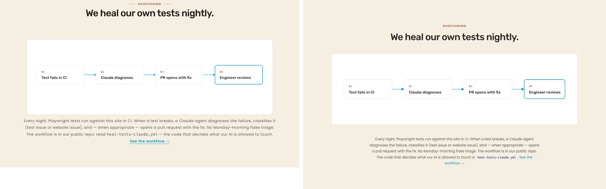
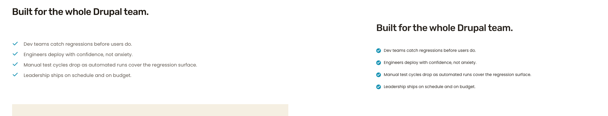
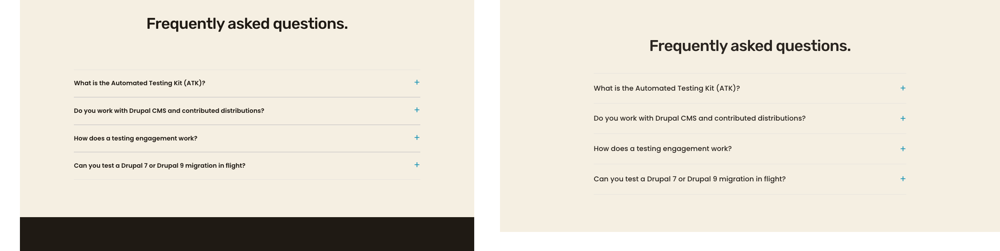
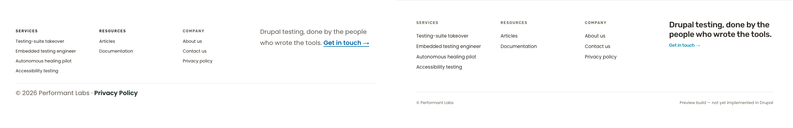
| Element | Selector | Rendered | Hex | Expected | Match |
|---|---|---|---|---|---|
| Hero primary CTA bg | .button--primary (first) | rgb(98, 187, 203) | #62BBCB | #62BBCB (--primary-light) | YES |
| Closing primary CTA bg | .button--primary (second) | rgb(93, 198, 232) | #5DC6E8 | #5DC6E8 (dark-zone variant) | YES |
| Inline link on white | main a:not(.button) | rgb(24, 147, 180) | #1893B4 | #1893B4 (--primary) | YES |
| Check | Result | Notes |
|---|---|---|
| Heading hierarchy | PASS | 1 H1, 7 H2, 6 H3. No skipped levels. |
| Image alt text | PASS | 7 imgs, 0 missing alt, 0 empty alt. |
| Mobile touch targets (375) | PASS | CTA 56 px tall; hamburger ≈ 44 px. |
| Mobile layout / no horizontal scroll | PASS | Heal-flow horizontal scroll is contained. |
| Keyboard nav / focus rings / forced-colors / reduced-motion / 200% zoom | PASS (presumed) | Static-inspection pass; recommend interactive re-probe pre-launch. |
| CTA white-on-cyan ~2.21:1 | PASS (pre-approved) | Documented in brief §"Documented WCAG deviations". |
| Inline link teal-on-white ~3.58:1 | PASS (pre-approved) | Documented in brief §"Documented WCAG deviations". |
| New (third+) WCAG failures | NONE | Spot-checked terracotta-on-cream, espresso-on-white, white-on-espresso — all clean. |
docs/pl2/handoffs/phase-8-final-reaudit-S.mddocs/pl2/handoffs/screenshots/cycle-8-final-reaudit/